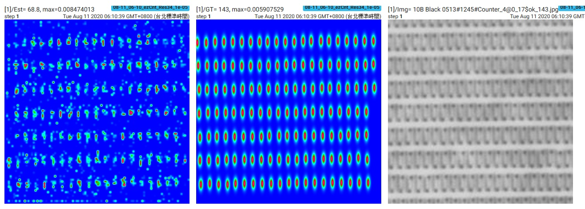
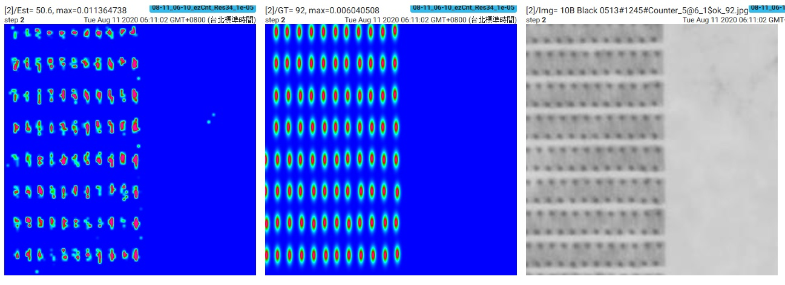
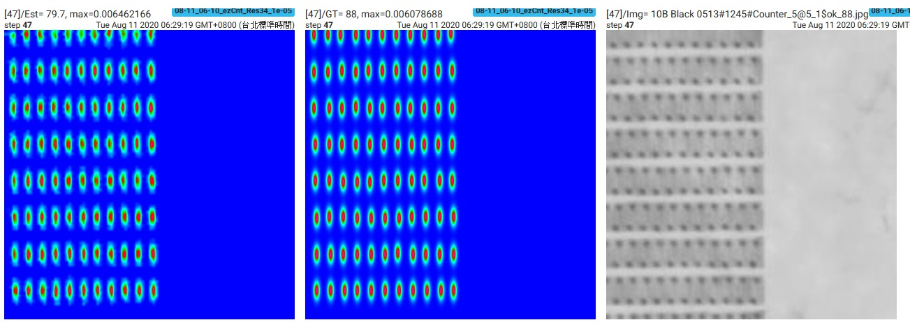
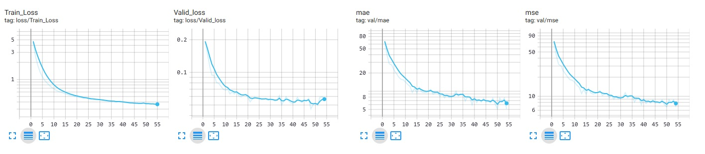

LE
TIAN
Machine Learning
模型 EzNet (m2x4) 訓練
Training Samples
Epoch 1 次

Epoch 2 次

Epoch 47 次

Loss, MAE, and MSE

檢視 Eazy Counter 計數範例
References:
[1] CSRNet: Dilated Convolutional Neural Networks for Understanding the Highly Congested Scenes
[2] Single-Image Crowd Counting via Multi-Column Convolutional Neural Network
[3] Satellite Imagery Multiscale Rapid Detection withWindowed Networks
[4] YOLOv4: Optimal Speed and Accuracy of Object Detection
[5] Residual neural network
[6] Convolutional neural network